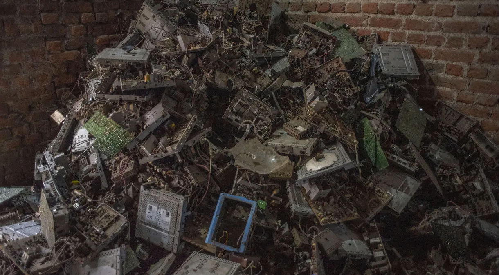
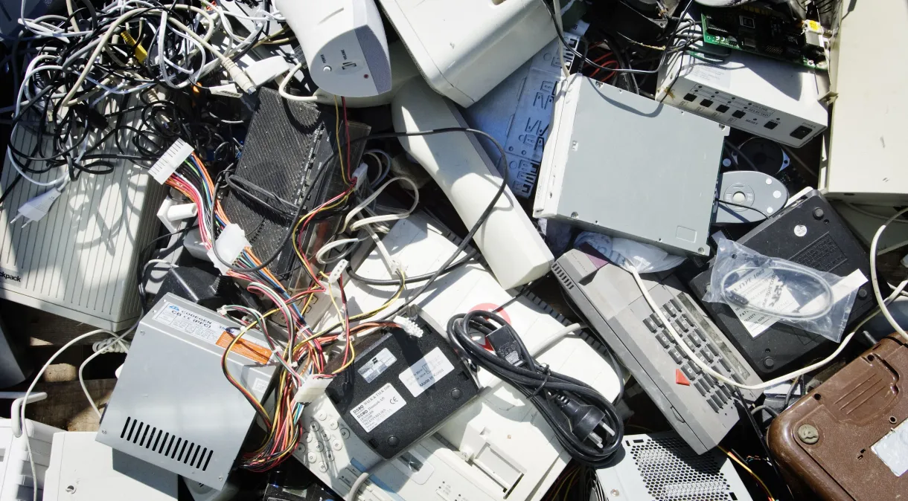

Lixo eletrônico chegou a nível recorde; entenda o problema
postado 06 de junho 2024 E-lixo global aumentou 82% em 2022 em comparação com 2010, segundo um novo relatório.
Leia maisComo descartar o lixo eletrônico?
postado 05 de junho 2024 Computadores, pilhas, ventiladores e, até mesmo, geladeiras, são alguns dos objetos considerados lixo eletrônico ou e-lixo. Aprenda a maneira correta de descarte!
Leia mais